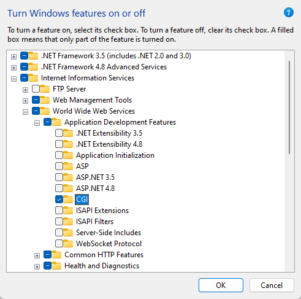

23. Deploy Project into Windows Server (IIS)#
23.1. Prepare Python env and IIS#
23.1.1. Python Environment Setting#
According to author’s experience,
python 3.9.xis not compatible withFastCGI, therefore we need to re-create a conda env withpython==3.8And then, we need reinstall the required library, in a case you do not generate
requirements.txt, we do it one by one herewfastcgiprovides a bridge between IIS and Python using WSGI and FastCGIconda create -n py38 python==3.8 conda activate py38 pip install django pip install django-allauth pip install django-crispy-forms pip install crispy-bootstrap4 pip install jwt pip install et-xmlfile pip install requests pip install urllib3 pip install wfastcgi pip install pillow
23.1.2. Django Project Setting#
Remember to change Debug model to
Falseand add Host IP into yourdjango_project.settings.pySet
STATIC_URL,STATIC_ROOT,MEDIA_URL,MEDIA_ROOTDon’t put any static files in the
STATIC_ROOTdirectory. That’s where the static files get copied to automatically after you runcollectstatic.Instead, always put them in the directories associated with the
STATICFILES_DIRSsetting or<APP_NAME>/static/.#django_project.settings.py ... DEBUG = False ALLOWED_HOSTS = ['*'] ... STATIC_URL = "static/" MEDIA_URL = '/media/' STATIC_ROOT = os.path.join(BASE_DIR,'static') MEDIA_ROOT = os.path.join(BASE_DIR,'media') ...
23.1.3. Install IIS#
Search Turn Windows features on or off, check
Internet Information ServicesandInternet Information Services Hostable Web CoreGoto
Internet Information Services>World Wide Web Services>Application Development Features, CheckCGI
Click
OKto apply this setting, and restart your machine to activate it.
23.1.4. Verify the IIS Installation#
Open a web browser on the server, goto http://localhost/.You should see the default IIS page.
23.2. Configure IIS#
23.2.1. Option 1: Configure FastCGI using IIS#
Click on the name of the server in the list on the left. Double-click the
FastCGI SettingsiconUnder
Actionson the right-hand side clickAdd application …In the Add FastCGI Application dialog, in the
Full Pathbox, type the path to the Python env we just created, and In theArgumentsinput box, type the path to thewfastcgi.pyfile in thesite-packagesUnder the
Generalsection, click on theEnvironment Variablesline, then click the gray…button that appears next to (Collection) on the right-hand side of the line.Add
DJANGO_SETTINGS_MODULEwith value{Your_Django_Project_name}.settingsAdd
PYTHONPATHwith value{Your_Django_Project_Path}Add
WSGI_HANDLERwith value{Your_Django_Project_name}.wsgi.application
23.3. Create and Configure a New IIS Web Site#
Next, we need to create a new website in IIS for the Django application and add a Handler Mapping to the newly created website so that requests coming to the IIS website are passed off to the Django application for processing.
23.3.1. Create a new Web Site#
Open
IIS Manager, Right-click on theSitesfolder and clickAdd Website …For the
site, name the project as you want. For thephysical path, type the path to the project. ClickOK.
23.3.2. Option 1: Set FastCGI Handler using IIS#
Next, we’ll add a FastCGI handler mapping to this site so the requests coming into the site will be processed by the Django application.
In
IIS Manager, expand the Sites folder on the left-hand side and click on thesite. On the right, double-clickHandler MappingsOn the right, under
Actions,clickAdd Module MappingFill out the form using your data
D:\Anaconda3\envs\py38\python.exe|D:\Anaconda3\envs\py38\Lib\site-packages\wfastcgi.py
Click the
Request Restrictionsbutton and uncheck theInvoke handler only if the request is mapped tocheckbox
23.3.3. Option 2: Set FastCGI Handler using web.config#
Build a
web.configat under the same dir of{Your Django Project}, below is myweb.configfile<?xml version="1.0" encoding="utf-8"?> <configuration> <system.webServer> <handlers> <add name="Python FastCGI" path="*" verb="*" modules="FastCgiModule" scriptProcessor="D:\Anaconda3\envs\py38\python.exe|D:\Anaconda3\envs\py38\Lib\site-packages\wfastcgi.py" resourceType="Unspecified" requireAccess="Script" /> </handlers> </system.webServer> <appSettings> <add key="WSGI_HANDLER" value="django.core.wsgi.get_wsgi_application()" /> <add key="DJANGO_SETTINGS_MODULE" value="django_project.settings" /> <add key="PYTHONPATH" value="E:\2024\github\django-blog-project\django_project" /> </appSettings> </configuration>
23.4. Load Static and Media file properly#
23.4.1. Gather all static files and make a static virtual path#
run
python manage.py collectstaticunder your django projectIt will generate
adminunder yourstaticpath, which contains all static files

Add Virtual Directoryin your siteFill the form using your
staticinfoPut a
web.configunder yourstaticfolder<?xml version="1.0" encoding="UTF-8"?> <configuration> <system.webServer> <handlers> <clear /> <add name="StaticFile" path="*" verb="*" modules="StaticFileModule" resourceType="File" requireAccess="Read" /> </handlers> </system.webServer> </configuration>
23.4.2. Do the same for media#
23.5. Check Result and Set Firewall#
23.5.1. Check Result#
At this point everything should be working, so verify by loading the application in a browser.
Open a browser on the server, Browse to
http://localhost:{port number you set}
23.5.2. Configure the Windows Firewall#
23.6. Possible Error#
23.6.1. Python env issue#
Error occurred while reading WSGI handler:
Traceback (most recent call last):
...
File "D:\Anaconda3\envs\py38\lib\site-packages\django\apps\registry.py", line 83, in populate
raise RuntimeError("populate() isn't reentrant")
RuntimeError: populate() isn't reentrant
StdOut:
StdErr:
open
django/apps/registry.py, and around line 80, replace:raise RuntimeError("populate() isn't reentrant")withself.app_configs = {}This will allow Django to continue loading, and reveal the actual error.